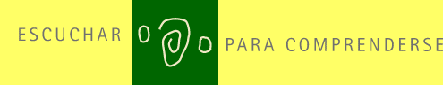

¿ Y si el año
2000 fuera un nuevo comienzo,
la ocasión de transformar - juntos -
la cultura de guerra y violencia en una cultura de paz y no violencia?

Son los seis
puntos del Manifiesto
2000 ya firmado por los Premios Nobel de
la Paz.
Usted también puede firmarlo.